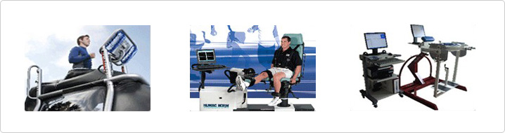

本院的关节内窥镜手术
实施诊断与手术同步进行的day surgery手术系统
- 从住院到诊断及手术，只需2天1夜即可，并另设病房和治疗体系
- 通过关节保存中心进行早期关节炎治疗，从而防止演变成退变性关节炎
- 可一次性进行骨棘去除、滑液膜去除术以及截骨术等治疗过程

通过临床医学研究中心不断研发以及开发新手术方法
- 由教授级的专科医疗小组亲自做手术
- 参与研究论文写作以及手术方法的开发
与运动康复中心的挂钩，运营运动损伤和外伤后帮助患者恢复日常生活的项目
- 通过测试手术前后的元气测试，进行恢复元气的运动项目
- 在国内最早利用失重步行运动系统G-Trainer，帮助患者快速恢复
- 用3D Air balance使散乱的关节恢复均衡。